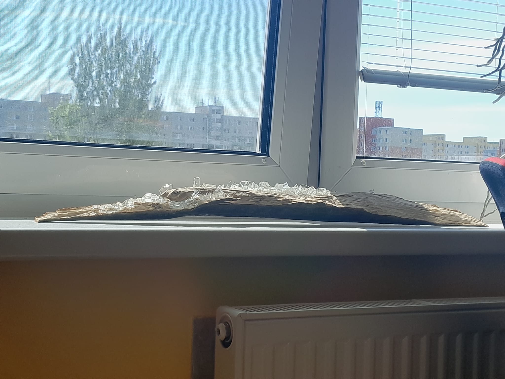
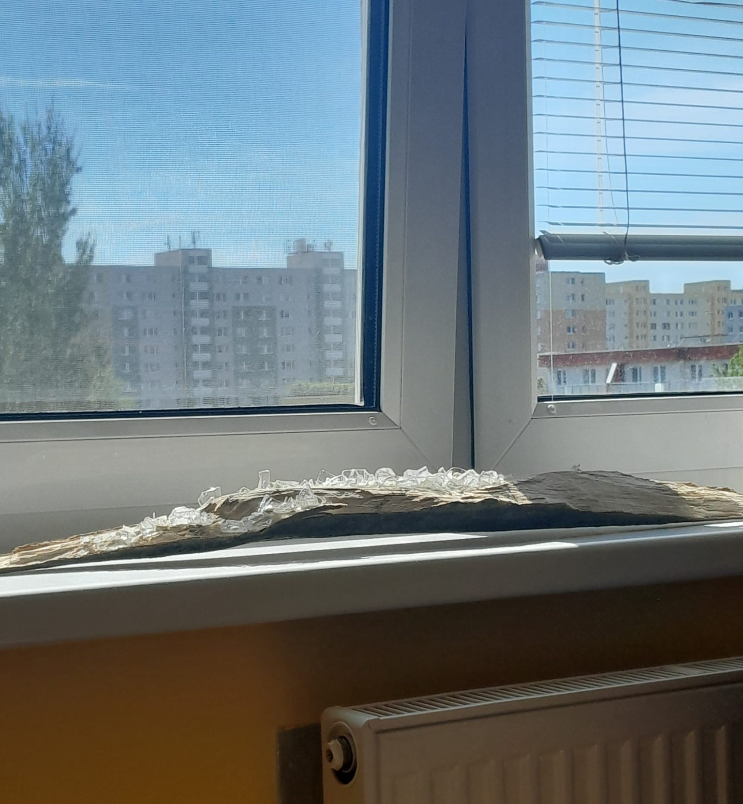
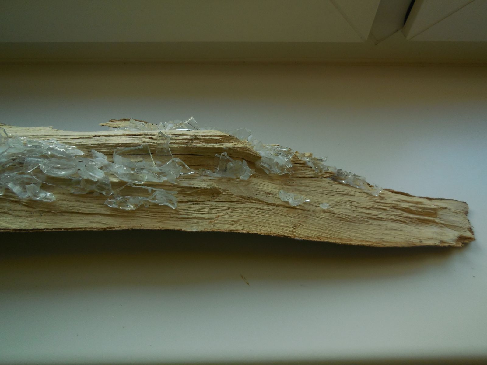
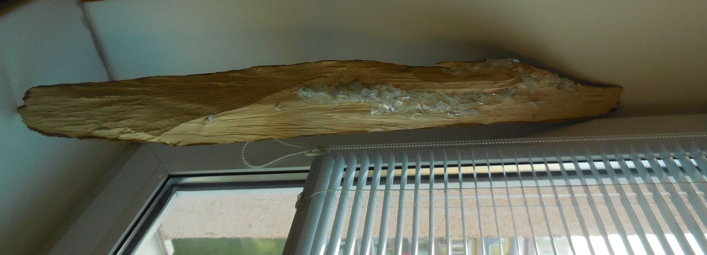
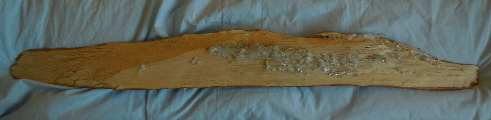
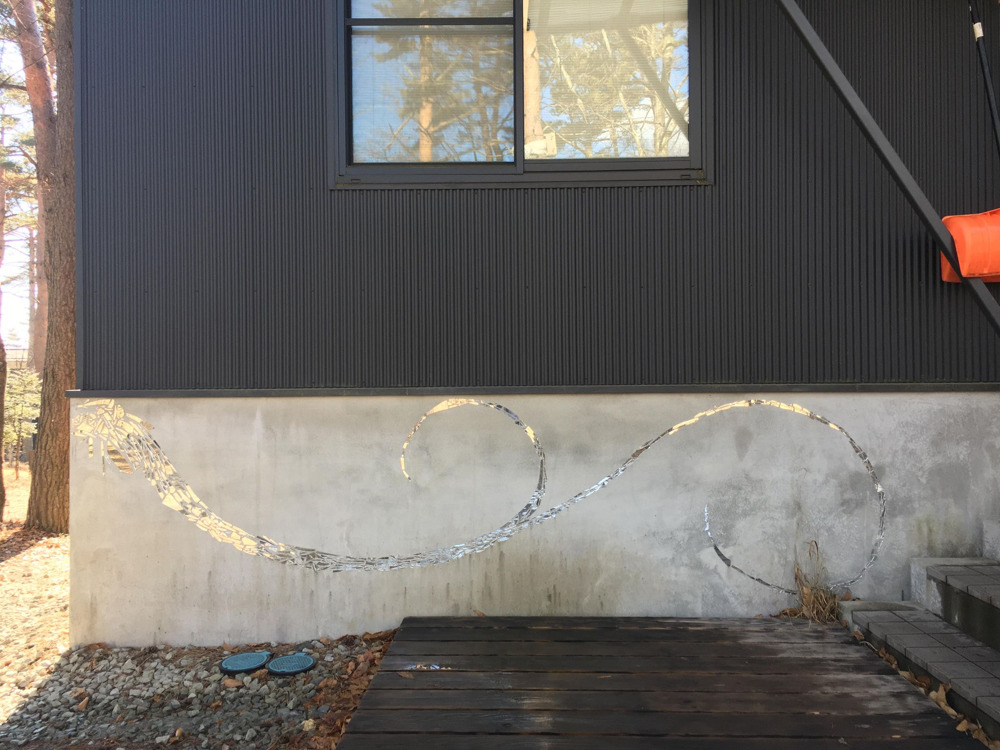

I went for an end of the year hike, coincidentally there was a strong storm the night before. I found wood lying around. A product of the splitting of a mature tree in the winds. Unlike a fission? You could touch this part of its body from the inside. Lying there. Texture, growth rings which are years, past time. I thought about fragments, memory, past - and then shrapnels of glass and put them on with hot wax.
now i heard, it's just a thing that catches dust and maybe we should throw it away? Still since I put it on my windowsill there's times when the light nicelly reflects off the many shrapnels catching a stray piece. in the growth rings , one ring per one year they thaught us in elementary school. unlike when memories come up.
   a found mirror at the trash station
a junior from my g11 houe was so kind and took this picture for me after I left, thank you Rin!
